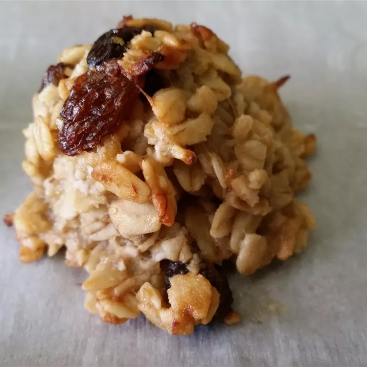

Banana Cookies

Description
Hey! there, today we're gonna look into how to prepare healthy and delicious banana cookies. These cookies, per serving, have: calories (56), fat (2g), carbs(8g), and protein (1g).
Ingredients
- 3 ripe bananas
- 2 cups rolled oats
- 1 cup dates pitted and chopped
- 1/3 cup vegetable oil
- 1 teaspoon vanilla extract
Steps
- Preheat oven to 350 degrees F (175 degrees C).
- In a large bowl, mash the bananas. Stir in oats, dates, oil, and vanilla. Mix well, and allow to sit for 15 minutes. Drop by teaspoonfuls onto an ungreased cookie sheet.
- Bake for 20 minutes in the preheated oven, or until lightly brown.